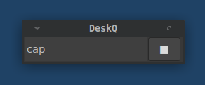
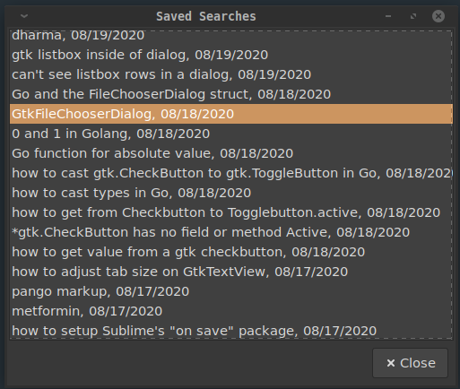
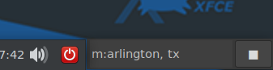

Here is DescQ positioned along side the xfce panel.
DescQ is convenient command based application and Internet query launcher consisting of a GUI entry field that you position on your Linux desktop.
Features:
3 - 5 are also available at the command line.
download and install the .deb file.
In case you're wondering, DescQ is written in C using Gtk3
You might want to configure DescQ to run on system startup.
To re-position use the cap command to toggle the
window caption bar on and off for window positioning.
The winset command saves the windows geometry and
caption status in winmet.txt.

Here is DescQ positioned along side the xfce panel.
DescQ commands:
| command/text | action/description |
|---|---|
| a URL | saves URL to a list |
| search text | starts a search in browser |
| sc or action button | saves clipboard contents |
| list | opens dialog with list of saved URLs |
| hist | opens dialog with list of saved search texts |
| cap | toggles window caption bar |
| winset | saves window size/position settings |
| eu | edit saved URL list (urls.lst) |
| ec | edit saved clips text (clips.txt) |
| eh | edit saved search history (hist.csv) |
| es | edit custom command / services file (serv.txt) |
| eq | edit edit the search query engine URL (search.txt) |
| ee | edit edit the name of your text editor (editor.txt) |
| top | toggles the window level to Top or Bottom |
| help | view this help |
| up arrow key | recall last 10 commands or search text |
| Esc key | clear entry field |
Use the hist command to pop up a dialog of your
saved searches. Click to search again.

Use es to edit serv.txt file.
The serv.txt file holds your aliases for
custom commands and URLs.
The entries in serv.txt take two forms:
Aliases can be either URLs or system commands.
The general format is
Alias, {URL | fullpath-command-line_}
To create an alias first invent a name for
the command. The name is simply a "key" (alias)
that you will type in to launch the command.
git,https://github.com
dev,dev.sh
shutdown, shutdown now
reboot,reboot
drive, https://drive.google.comTo perform these commands in DescQ you would type in
the alias and hit Enter or click the action button.
Deskq will match on leading characters or substrings
of your alias.
Note: if you create an alias in serv.txt and then
mistype it when using it, the mistyped alias will
be treated as a search and launch it in the
browser.
Using the example aliases above:
| typed | resulting action |
|---|---|
git |
opens github.com in your browser |
dev |
executes your shell script to ... ? |
shut |
shuts down your machine |
shutdo |
shuts down your machine |
sh |
shuts down your machine |
reboot |
reboots your machine |
reb |
reboots your machine |
It helps to create your commands in "serv.txt"
in assending order which should allow for unique substrings
as your commands become familiar from use.
Searches and/or aliases can be combined by delimiting
with "|" eg. git|dev|someothercommand|...
Perform three searches with one command:
dogs|cats|tadpoles
Directly execute an app installed on your system
and in the system path like this:
$app
For example: $gimp
"$" can be "$" or "@" or ">"
These are URLs that may have a ?querystring after
the domain and path part. In serv.txt the
first character of each line must begin with
a single letter (a-z, 1-0).
The general format is:
?,name,website-URL + query-string...
where ? = a unique letter a-z, A-Z, 0-9
You may have to experiment with each website to learn
how it formats their search querystring.
a,Amazon,https://smile.amazon.com/s/ref=nb_sb_noss_1?field-keywords=
i,Google Images,http://images.google.com/images?q=
p,Php,http://php.net/manual-lookup.php?pattern=
m,Google Maps,https://www.google.com/maps/search/

For example: m:arlington, TX
It may take a little work to discover some of these
querystrings but many do exist. DeskQ comes with
several already set up.
To save a URL copy or type it into DescQ and hit Enter.
To view and re-open saved URLs type list into DescQ and hit Enter.
To save text from your system clipboard just type sc
or click the action button with the entry field empty.
To view/edit text you've saved just type ec Enter.
Your text editor will pop-up with all of your clips.
The "e_" commands for DeskQ require a simple text editor.
Put the name of your installed text editor into the first
line of the editor.txt file. It comes with gedit in the file.
sublgeditxedatomgeditwhatever The search engine query string is set to DDG
by default. You can change it by editing
the search.txt file to the query string
for your favorite search engine.
One of the advantages of DDG is its
BANG query feature. Checkout
https://duckduckgo.com/bang
to find out how it works. Very cool!
clip.txt |
text file of clippings |
descq |
Linux executable |
hist.txt |
text file of search history |
serv.txt |
text file of $ commands and special querys |
winmet.txt |
window geometry ... |
editor.txt |
name of your text editor program |
urls.txt |
text file of saved URLs |
search.txt |
querystring to search with you favorite search engine |